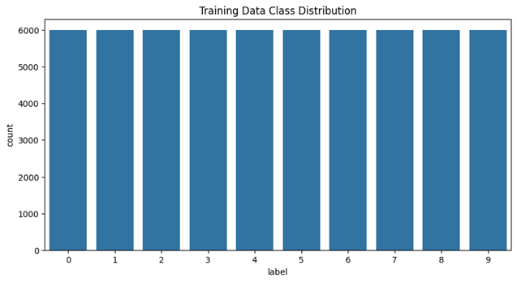
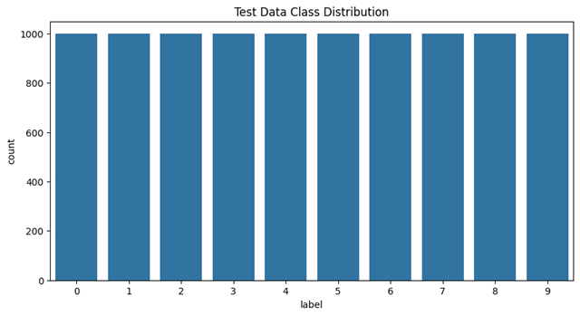

This report explores the FashionMNIST dataset, a popular benchmark in the field of machine learning, consisting of grayscale images of 10 different fashion categories. The study focuses on evaluating and comparing the performance of several machine learning models in classifying these images. We implement a variety of models, including traditional machine learning algorithms such as KNN and PCA as well as deep learning approaches like Convolutional Neural Networks (CNNs). The report analyzes the accuracy, computational efficiency, and model robustness across these approaches. Additionally, it discusses the strengths and limitations of each model in terms of classification performance and training time, offering insights into their applicability for real-world fashion image recognition tasks. Through this comparison, we aim to identify the most effective model for FashionMNIST classification and provide recommendations for future research directions.
Image classification is a fundamental task in machine learning, driving advancements in fields like autonomous systems and e-commerce. This project focuses on building a robust classifier for the MNIST Fashion dataset [1], a widely used benchmark consisting of 70,000 grayscale images of fashion items categorized into ten classes, such as t-shirts, trousers, and shoes. By addressing this classification challenge, the project explores practical applications of machine learning in recognizing and categorizing real-world image data.
The MNIST Fashion dataset provides a balanced yet challenging platform for developing and evaluating classification models. Each image, with a resolution of 28x28 pixels, represents a specific fashion item, making it an ideal dataset for testing the capabilities of traditional machine learning algorithms and modern deep learning approaches [2]. This project not only seeks to achieve high classification accuracy but also aims to ensure the computational efficiency and interpretability of the model.
Grounded in academic research, the project builds upon established methods such as KNN, decision tree, and CNNs. These methods emphasize the importance of preprocessing, parameter tuning, and model evaluation in achieving optimal performance. By leveraging PyTorch for flexibility and scalability, the project aims to implement a classifier that excels in both accuracy and reliability.
Beyond technical development, this project highlights the real-world significance of image classification in industries such as retail and logistics. The practical insights gained from this work are expected to contribute to the broader understanding of computer vision challenges, demonstrating the value of machine learning in addressing everyday problems. Through a combination of rigorous experimentation and practical application, the project bridges the gap between academic research and industry needs. Moreover, image classification contributes to cost reduction, enhanced product quality, and improved efficiency, while ensuring safety and compliance. By enabling supply chain optimization, data-driven decision-making, and customization, AI provides manufacturers with a competitive advantage in a dynamic industry. These advancements not only streamline operations but also pave the way for more personalized and innovative manufacturing processes, shaping the future of the industry.
Fig.1 Significance of AI in industry manufacturing.
This project focuses on applying machine learning techniques to classify images from the MNIST Fashion dataset, leveraging PCA, CNN, and KNN. These methods were chosen for their complementary roles in dimensionality reduction, feature extraction, and classification. The integration of PCA, CNNs, and kNN for image classification has been extensively explored in the literature, offering valuable insights into their combined strengths and challenges. Soon and Khaw (2020) demonstrated the effectiveness of PCA in dimensionality reduction for high-dimensional datasets like MNIST [3]. However, they acknowledged PCA's limitation in handling nonlinear data distributions, which can result in the loss of critical information. Chan et al. (2015) highlighted the simplicity and efficiency of their PCANet approach, which leverages PCA as a preprocessing step for CNN feature extraction [4]. Despite its success, their method needed more scalability to more complex datasets, as it struggled with computational bottlenecks in larger and more diverse image sets. Yu and Zhang (2014) explored a hybrid CNN-kNN model that paired CNNs for feature extraction with kNN for classification [5]. While this combination showed promise in reducing computational complexity with PCA preprocessing, the kNN classifier’s dependency on pairwise distance calculations made it inefficient for larger datasets. Another article documented the advanced CNN-based clustering and representation learning for large-scale data [6]. However, they found that such models were prone to overfitting. Moreover, another research validated a PCA-CNN-kNN pipeline for signature recognition [7]. However, it falls short of fine-tuning the hyperparameters for optimal performance across varying datasets. These studies collectively underscore the utility and limitations of PCA, CNNs, and kNN, providing a foundation for addressing their drawbacks in practical applications.
The project began with the FashionMNIST dataset [3] in gzip format loaded and processed. It is a dataset consisting of a training set of 60,000 examples and a test set of 10,000 examples. Each is a 28x28 grayscale image, associated with a label from 10 classes. The dataset was imported via file and the images were flattened to transform from 2D arrays to 1D. Reshaping the images into 28x28 pixel arrays ensures the image data and labels match in length, making sure there are no null values, and then splits the data into training and validation sets, with an 80-20 split. The training data undergoes random augmentations like horizontal flips and rotations, followed by conversion to tensors and normalization. The validation and test data are only converted to tensors and normalized, without any augmentation. Normalizing the tensors mean to 0.5 and standard deviation to 0.5.
The data was processed using PCA for dimensionality reduction, retaining 85% variance with 40 components. This demonstrates that a majority of the important information was captured, even after reducing dimensionality from the original feature space. The reduced feature set (from PCA) was used as input to classifiers such as KNN, showcasing how dimensionality reduction aids in model performance by simplifying the data. This approach effectively reduced computational costs and improved the interpretability of the data without significant loss of critical information.
A pyTorch-based model was constructed for defining layers and for optimization. KNN was optimized using the elbow method to determine k = 5, balancing complexity and performance. A simple decision tree model was implemented for comparison, focusing on accuracy metrics. Models were evaluated using standard metrics such as accuracy, precision, recall, F1 score, and confusion matrix. Feature engineering with PCA allowed for effective dimensionality reduction and better clustering of classes. Extensive experiments with hyperparameters for the KNN classifier to ensure optimal performance. Neural networks used a custom architecture tuned for the task, demonstrating significant accuracy improvements over baseline models. CNN are highly effective for image datasets because they automatically learn hierarchical features, enabling them to recognize patterns such as edges, textures, and objects without manual feature extraction. The flowchart of the proposed approach is shown in Fig. 1
Fig. 2 Sample FasionMNIST Data for all 10 unique labels.
The results of the experiments conducted on the dataset demonstrate the performance of different classification approaches; Decision Tree Classifier, KNN Classifier, and a CNN. The comparison and evaluation of these methods are conducted in terms of accuracy, precision, recall, F1-score metrics, and the analysis of a confusion matrix.
For exploratory data analysis, we flatten the images and visualized class distribution in training and test data. Fig.3 visualizes the sample data from FashionMNIST dataset for all 10 unique labels.
Fig. 3 Sample FasionMNIST Data for all 10 unique labels.
First of all, the data pre-processing steps have been conducted for effective training and testing. PCA has been employed for dimensionality reduction, reducing the high-dimensional image data while preserving the essential characteristics needed for classification. The results showed that with 40 principal components, approximately 84.45% of the variance in the dataset was retained, indicating a significant reduction in dimensionality with minimal information loss. This dimensionality reduction has helped to simplify the computational complexity of traditional classifiers like KNN and Decision Tree but also helped to visualize the separability of classes. The PCA visualization revealed clusters corresponding to different labels, demonstrating the usefulness of PCA in projecting the dataset into a more interpretable space for analysis. PCA is effective for image datasets because it reduces the dimensionality of the data while retaining the most important features, which helps to capture the underlying structure of the images. By transforming the original data into a smaller set of uncorrelated variables (principal components), PCA improves computational efficiency and reduces noise, making it easier to visualize, classify, or cluster large image datasets without losing significant information. Fig.4 visualizes the training data class distribution count of 6000 and Fig.5 visualizes the test data class distribution count of 1000.
Fig. 4 Training Data Class Distribution, count of 6000.
Fig. 5 Test Data Class Distribution, count of 1000.
Decision Tree Classifier, after being trained on PCA-reduced features, achieved an accuracy of 76.76%. While this accuracy might be regarded as reasonable to an extent, the score highlighted the limitations of decision trees in handling high-dimensional image data, even after dimensionality reduction. The method’s reliance on simple decision boundaries often is challenged to generalize well, particularly for visually complex or overlapping classes.
On the other hand, the KNN, leveraging the same PCA-reduced features, demonstrated a significant improvement compared to the Decision Tree Classifier with an accuracy of 85.37%. Number of neighbors (k) for KNN has been determined by the Silhouette score as demonstrated in Fig. 6 , and the optimal k has been considered as 5. This improvement mainly originated from KNN's ability to use distance-based metrics to capture relationships in the reduced feature space. However, KNN’s performance was still constrained by its inability to effectively model complex patterns inherent in the image dataset.
Fig. 6 PCA Representation.
The CNN model came across as the most effective classifier in this study. Unlike traditional classifiers, CNN directly operates on the raw image data, exploiting the hierarchical structures to extract spatial and hierarchical features. After training for ten epochs, CNN has achieved a test accuracy of 91.6%, significantly outperforming both the Decision Tree and KNN classifiers. The model's validation accuracy steadily improved over epochs, indicating effective learning without over-fitting. This is mainly due to the presence of regularization techniques like dropout and batch normalization. The higher performance of CNN underscores its superiority in image classification tasks, such as datasets like Fashion MNIST, where the ability to capture spatial dependencies is critical.
Fig. 7 Silhouette score representation of KNN method.
In terms of the evaluation metrics, CNN demonstrated macro-averaged precision, recall, and F1-scores of 92%. This reflects a balanced and robust performance across all classes. A more detailed analysis of the confusion matrix highlighted specific areas for improvement. Misclassifications were especially notable for Class 6 (Shirt), that showed lower precision and recall compared to other classes. This can be attributed to the visual similarity between shirts and categories like T-shirts (Class 0) and coats (Class 4). This led to overlapping features and confusion during classification of these. Such observations point to potential areas for further improvement, such as augmenting the dataset with more diverse examples of these classes or incorporating advanced techniques to enhance feature differentiation.
Fig. 8 Confusion matrix.
Despite the superior performance of CNN, the training process demonstrates its challenges in terms of computational resources and time. Compared to the traditional classifiers, CNN required significantly more time to train due to their complex architecture and reliance on iterative optimization. This trade-off between computational expense and model performance underscores the need for efficient training strategies for the CNN, particularly for resource-constrained environments. In summary, this study demonstrated the performances of different classification techniques on the Fashion MNIST dataset. CNN outperformed the Decision Tree and KNN classifiers significantly in terms of accuracy and overall evaluation metrics. While traditional classifiers like KNN showed a reasonable performance when paired with PCA for dimensionality reduction, their limitations in capturing complex spatial patterns were evident when compared to CNN.
The model makes predictions using a Convolutional Neural Network. CNNs are known to perform well in Computer Vision tasks such as image classification. The model starts off with the first convolutional layer which applies 32 filters of size 3x3 to an input image. This can detect features of the images such as edges and textures. Then, batch normalization is used to speed up the training process and normalize the output. Within the same more complex features or patterns. Finally, max pooling is used in this layer which reduces the 28x28 image down to 14x14 and makes it easier to process. In the second convolutional layer, 64 3x3 filters are applied on top to identify more complex features and shapes/objects. Similarly, Batch Normalization and the ReLU activation function are used again for normalization and non-linearity. Max Pooling is used at the end to reduce the image further. Finally, in the fully connected layers, the output is converted to a 1D vector of size 64x6x6 and the layer has 512 neurons which combine the features to identify patterns in the first layer. The dropout is used for randomly setting 50% of the inputs in this case to zero during training to prevent overfitting between the layers. In the final fully connected layer, the layer uses 10 neurons for the 10 different types of clothing. Within the CNN as a whole, the features are encoded in the weights of the filters.
This project highlights the practical implications of advanced image classification techniques, showcasing their potential to transform business operations in industries like retail, logistics, and e-commerce. By leveraging convolutional neural networks (CNNs) and dimensionality reduction methods like PCA, businesses can achieve accurate and efficient product categorization, enabling streamlined inventory management and personalized customer experiences. The use of machine learning metrics, such as precision and recall, empowers data-driven decision-making, ensuring model performance aligns with business objectives. While CNNs demonstrated superior accuracy in classifying complex patterns, the study also emphasized the trade-offs in computational resources, offering resource-efficient alternatives like KNN paired with PCA for less demanding environments. Ultimately, this work bridges the gap between academic exploration and real-world application, providing actionable insights for integrating AI-driven solutions into diverse business processes.
This project provided valuable insights into traditional and modern machine learning approaches for image classification tasks. Dimensionality reduction using PCA significantly improved training speed without sacrificing model performance, achieving 85% variance retention with just 40 components.The elbow method helped identify an optimal k=5, demonstrating that proper parameter tuning is essential for classical models. The KNN classifier Accuracy was 85% and decision tree was 76%. The neural network outperformed traditional models like KNN and decision trees, showcasing the strength of deep learning for complex tasks. The CNN test accuracy was 92% and ANN was 88%. Deep learning models require extensive computational resources and careful hyperparameter tuning but provide superior performance in most cases.
[1] Xiao, Han, Kashif Rasul, and Roland Vollgraf. "Fashion-mnist: a novel image dataset for benchmarking machine learning algorithms." arXiv preprint arXiv:1708.07747 (2017).
[2] Kadam, Shivam S., Amol C. Adamuthe, and Ashwini B. Patil. "CNN model for image classification on MNIST and fashion-MNIST dataset." Journal of Scientific Research 64, no. 2 (2020): 374-384.
[3] Soon, Foo Chong, Hui Ying Khaw, Joon Huang Chuah, and Jeevan Kanesan. "Semisupervised PCA convolutional network for vehicle type classification." IEEE Transactions on Vehicular Technology 69, no. 8 (2020): 8267-8277.
[4] Chan, Tsung-Han, Kui Jia, Shenghua Gao, Jiwen Lu, Zinan Zeng, and Yi Ma. "PCANet: A simple deep learning baseline for image classification?." IEEE Transactions on image processing 24, no. 12 (2015): 5017-5032.
[5] Ren, Weiqiang, Yinan Yu, Junge Zhang, and Kaiqi Huang. "Learning convolutional nonlinear features for k nearest neighbor image classification." In 2014 22nd international conference on pattern recognition, pp. 4358-4363. IEEE, 2014.
[6] Hsu, Chih-Chung, and Chia-Wen Lin. "Cnn-based joint clustering and representation learning with feature drift compensation for large-scale image data." IEEE Transactions on Multimedia 20, no. 2 (2017): 421-429.
[7] Abosamra, Gibrael, and Hadi Oqaibi. "A Signature Recognition Technique With a Powerful Verification Mechanism Based on CNN and PCA." IEEE Access (2024).
[8] Ashwin-k22. “Ashwin-K22/ECEN758-G11: ECEN 758 Data Mining and Analysis Project - Group 11.” GitHub, github.com/ashwin-k22/ecen758-g11. Accessed 20 Nov. 2024.
[9] Tropea, Mauro, and Giuseppe Fedele. "Classifiers comparison for convolutional neural networks (CNNs) in image classification." In 2019 IEEE/ACM 23rd International Symposium on Distributed Simulation and Real Time Applications (DS-RT), pp. 1-4. IEEE, 2019.
[10] Aslam, Sidra, and Tamer Farouk Rabie. "Principal Component Analysis in Image Classification: A review." In 2023 Advances in Science and Engineering Technology International Conferences (ASET), pp. 1-7. IEEE, 2023.
This site was created with the Nicepage